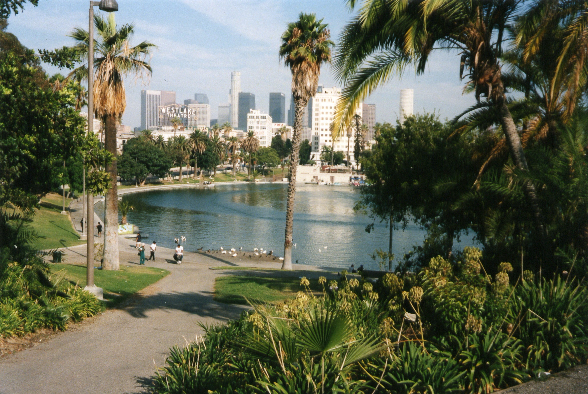
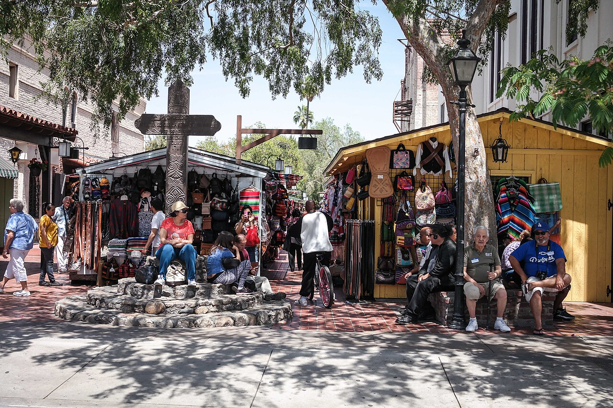

Defensa Legal con Historia
Pioneros desde 1981 en casos de asilo, acuerdos históricos ABC, TPS, NACARA, DACA y reunificación familiar en California.
Desde 1981 acompañamos a personas y familias inmigrantes en Los Ángeles con orientación jurídica cercana, defensa de su dignidad y caminos reales hacia el bienestar comunitario.

Orientación legal, clínicas de miércoles y sábados y defensa comunitaria sin barreras.

Nacida en el corazón de Westlake en 1981, El Rescate camina junto a la población inmigrante construyendo arraigo, dignidad y futuro compartido.
Fundada en 1981 por una necesidad humanitaria urgente, nacimos para brindar representación legal ética, refugio comunitario y oportunidades económicas a cada familia inmigrante que construye su vida en Los Ángeles.
Pioneros desde 1981 en casos de asilo, acuerdos históricos ABC, TPS, NACARA, DACA y reunificación familiar en California.
Cada consulta se realiza en tu idioma, con respeto absoluto por la historia de tu familia y sin tecnicismos intimidantes.
Tus datos y consultas están protegidos bajo secreto profesional. Jamás compartimos información con autoridades migratorias.
Combinamos rigor jurídico, clínicas comunitarias semanales y educación financiera para fortalecer a toda la comunidad inmigrante del sur de California.
A medida que avanzas, conoce los tres pilares con los que acompañamos a cada persona desde su primera charla hasta la resolución de su caso.
Evaluación honesta de elegibilidad para asilo, TPS, DACA, peticiones familiares, visas humanitarias (U/VAWA) y naturalización.
Jornadas semanales de orientación comunitaria con reserva en línea para resolver dudas urgentes en un entorno seguro.
Asesoría para pequeños negocios migrantes, talleres de ciudadanía y redes de apoyo familiar en Los Ángeles.
Representación legal especializada para personas y familias que buscan protección en Estados Unidos, incluyendo asilo afirmativo y defensivo, visas U para víctimas de delitos y peticiones VAWA.
IMMIGRATION, COMMUNITY & LEGAL SERVICES • ARCHIVO 3D
Selecciona uno de los días marcados en azul (miércoles o sábados), elige tu horario y confirmaremos tu cita.
¿Sobre qué tema necesitas orientación principal? Selecciona una opción y pre-configuraremos tu cita en la clínica: